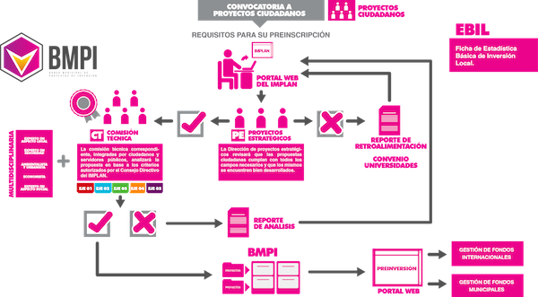

Banco Municipal de Proyectos
Por TrcIMPLAN, 2014-05-01
El Instituto Municipal de Planeación y Competitividad, a través de la Dirección de Proyectos Estratégicos, tiene como objetivos gestionar, evaluar y dar seguimiento a los proyectos derivados del Plan Estratégico de Ciudad del IMPLAN, así como promover la participación ciudadana, a través del acompañamiento y mejora de aquellos ideas y proyectos formulados por la sociedad. Para aportar al logro de este objetivo, el IMPLAN desarrolla dos instrumentos que apoyen los procesos de planeación, inversión y ejecución de los proyectos promoviendo la eficiencia, eficacia y equidad de los mismos.
¿Qué es el BMPI? El BMPI es un instrumento dinámico de gestión pública, orientado a consolidar una cultura municipal de formulación (preparación), planeación, seguimiento y evaluación de programas y proyectos de inversión, por medio de sus componentes y funciones.
¿Qué hace?
- Interopera con el Sistema de Evaluación y Seguimiento de Proyectos.
- Recopila y clasifica la información referente a cada proyecto.
- Procesar la información en entregables útiles para la toma de decisiones como estadísticas, reportes, mapas, cédulas de evaluación, etc. Resguarda la información a lo largo del tiempo (fomenta la memoria institucional).
¿Qué es el SESP? El Sistema de Evaluación y Seguimiento de Proyectos es un conjunto articulado de métodos y herramientas que facilitan la formulación, priorización, evaluación y seguimiento de los proyectos de inversión. Aportando los criterios al BMPI para la clasificación, recopilación e inventariado de proyectos.
¿Qué hace?
- Evalúa la viabilidad de los proyectos. (económica, social, ambiental, técnica)
- Determina la prioridad en base a los planes de desarrollo vigentes.
- Evalúa el desempeño y el impacto de los proyectos.
- Monitorea el estado de los proyectos.
Proyectos Ciudadanos
El Instituto Municipal de Planeación Estratégica y Competitividad abre la convocatoria a proyectos ciudadanos, que permita la coordinación de los diversos actores sociales, sinergizando esfuerzos y gestionando recursos para la efectiva implementación de los proyectos ciudadanos de calidad y de impacto positivo en la calidad de vida de los Laguneros. Con esto en mente, el Banco Municipal de Proyectos se convierte en un espacio virtual permanente para la recepción de ideas y proyectos ciudadanos que sean susceptibles de inversión municipal, mediante la siguiente mecánica:
Registro de Proyectos Ciudadanos (Próximamente)
- Descarga la ficha EBIL (Ficha de Estadística Básica de Inversión Local) en el caso de que sea un proyecto desarrollado, sino descarga la ficha IP (Idea de Proyecto).
- Llénalas antes de entrar al Banco Municipal de Proyectos de Inversión.
- Ingresa al BMPI con tu usuario, si no tienes una generala en el acceso principal al BMPI.
- Ingresa y sigue las instrucciones.
- Una vez registrado el proyecto, espera respuesta del sistema.
